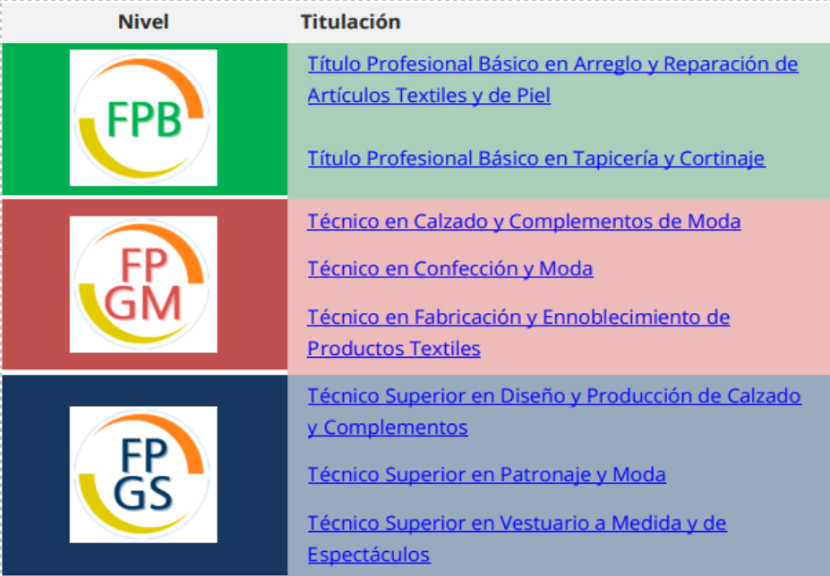

CERTIFICADO OFICIAL DE FORMACIÓN PEDAGÓGICA Y DIDÁCTICA PARA PROFESORADO TÉCNICO
1 INTRODUCCIÓ
La Formació Professional constituïx en l’actualitat un element vertebrador del sistema educatiu i d’ocupació a Espanya, situant-se en el centre de les polítiques actives d’aprenentatge al llarg de la vida. Sota el marc normatiu establit per la Llei orgànica 3/2022 i la seua desenrotllament reglamentari en l’RD 659/2023, es configura un sistema unificat i flexible, capaç de respondre a les necessitats canviants de l’entorn social i productiu.
Des de la perspectiva docent, este model implica un canvi significatiu en la concepció de l’ensenyança-aprenentatge. La Formació Professional ja no es limita únicament a la transmissió de coneixements tècnics, sinó que s’articula entorn de la adquisició, integració i transferència de competències professionals, enteses com el conjunt de coneixements, destreses, habilitats, actituds i valors necessaris per a l’exercici qualificat d’una activitat professional, en contextos reals i diversos.
El nou sistema situa la competència professional com a eix estructurador de tota l’acció formativa.
A més, el model fomenta una forta vinculació amb l’entorn productiu mitjançant la formació en entorns reals de treball, el desenrotllament de projectes col·laboratius amb empreses, la formació dual i l’avaluació de competències adquirides per vies no formals o informals. En este sentit, la labor docent requerix un enfocament metodològic actiu i adaptatiu, centrat en el desenrotllament integral del alumnat i orientat a la seua ocupabilitat, al seu itinerari formatiu i a el seu creixement professional i personal.
La Formació Professional comprén diferents graus d’estudis —tant en règim inicial com per a la formació contínua o de persones treballadores—, amb una organització modular, articulada a través de oferta formativa ajustada al catàleg de competències professionals. En este sentit, el sistema s’integra en el Catàleg Modular de Formació Professional i altres instruments d’acreditació que permeten reconéixer competències adquirides per vies formals, no formals o informals, segons el regulat en el Reial decret 659/2023 (Titular VI).
Així mateix, el sistema normatiu contempla que el currículum, els procediments d’avaluació, els espais de formació, els centres i els processos d’acreditació s’adapten als estàndards professionals vigents, la qual cosa afavorix el desenrotllament professional i social del alumnat, així com una millor resposta a les exigències del món productiu.
2 MODALITATS DE LA FORMACIÓ PROFESSIONAL
En el marc del Real Decret 659/2023, la Formació Professional es organitza mitjançant diferents graus (A, B, C, D i E) i modalitats que permeten una major accessibilitat, flexibilitat i adequació a les trajectòries personals i professionals.
Entre les modalitats destaquen:
La modalitat modular per als Graus C, D i E, que permet cursar un o diversos mòduls professionals segons el ritme personal de aprenentatge i les necessitats de qualificació, adaptant-se a persones adultes, en actiu, o amb experiència laboral.
La formació en alternança amb empresa (modalitats duals) i la oferta per a persones treballadores o en transició professional, de mode que s’afavorisca l’aprenentatge en entorns reals de treball i la inserció laboral.
La modalitat semipresencial o a distància, especialment per a persones adultes, que compatibilitzen formació amb ocupació o responsabilitats personals, mitjançant la combinació d’activitats no presencials i sessions presencials, així com recursos tecnològics de suport (encara que la normativa estatal posa èmfasi en modularització, flexibilitat i ritme personalitzat).
2.1 Tipologia d’ofertes segons graus
L’RD 659/2023 organitza les ofertes del sistema d’FP en cinc graus (A, B, C, D i E), la qual cosa estructura de manera clara tot el sistema
Grau A: Acreditació parcial de competències.
Grau B: Certificat de competència.
Grau C: Certificat professional.
Grau D: Cicle formatiu (Grau Bàsic/Mig/Superior).
Grau E: Cursos d’especialització.
Este enfocament remarca que no solament hi ha cicles bàsics/mitjana/superior com abans, sinó una tipologia molt més àmplia per a itineraris modulars, acumulatius i flexibles.
2.2 Modalitats de l’oferta de formació
El sistema de Formació Professional a Espanya, d’acord amb el establit en el Reial decret 659/2023, pel qual s’ordena el sistema de Formació Professional, i recollit a nivell autonòmic en el Decret 114/2025 (Comunitat Valenciana), reconeix tres modalitats d’oferta per als cicles formatius: presencial, semipresencial i virtual (a distància).
Estes modalitats responen a la necessitat d’oferir una formació flexible, accessible i adaptada a diferents perfils de l’alumnat, així com a les condicions de l’entorn socioeconòmic i productiu.
Modalitat Presencial
És la forma tradicional d’ensenyança, en la qual l’alumnat acudix físicament al centre educatiu per a realitzar la formació teòrica i pràctica.
Característiques principals:
Assistència regular a l’aula: Requerix la presència habitual del alumnat en el centre, segons un horari establit.
Interacció directa: Afavorix la comunicació cara a cara entre alumnat i professorat.
Entorns simulats o reals: Ús intensiu de tallers, laboratoris i espais específics del cicle.
Avaluació contínua: Major facilitat per a aplicar una avaluació formativa i ajustada al ritme del grup.
Modalitat Semipresencial
Combina l’assistència al centre educatiu amb activitats formatives desenrotllades de manera virtual, utilitzant plataformes d’aprenentatge en línia.
Característiques principals:
Flexibilitat horària: Permet a l’alumnat organitzar part de la seua formació segons la seua disponibilitat.
Part presencial obligatòria: Es definixen mòduls o parts de mòduls que requerixen assistència (per exemple, pràctiques de taller).
Ús d’entorns virtuals: Ús de plataformes LMS (com Aules, *Moodle, etc.) per a continguts, tasques i seguiment.
Tutories presencials i virtuals: Seguiment combinat per part del professorat.
Modalitat Virtual (o a Distància)
La totalitat del cicle formatiu es desenrotlla mitjançant plataformes digitals, sense exigència de presencialitat excepte en moments específics (per exemple, exàmens o *FCT si no es convalida).
Característiques principals:
Autonomia de l’alumnat: L’aprenentatge s’organitza de forma autònoma, respectant els temps establits pel centre.
Sense presencialitat habitual: Encara que poden fixar-se sessions presencials voluntàries o puntuals (avaluacions finals, pràctiques concretes…).
Plataformes d’aprenentatge: L’entorn virtual és l’espai central de l’aprenentatge (continguts, comunicació, avaluació).
Perfil adult: Molt orientada a persones treballadores, amb responsabilitats familiars o que no poden acudir regularment a un centre.
En totes les modalitats, s’assegura el compliment dels resultats d’aprenentatge i l’adquisició de les competències professionals recollides en el currículum oficial.
3 Nivells formatius
La Formació Professional s’estructura en diferents nivells de qualificació professional, definits en el Catàleg d’Estàndards de Competència, que servix com a eix vertebrador per a tota l’oferta formativa del sistema.
Independentment de la modalitat en la qual s’impartisca (presencial, semipresencial o virtual), l’oferta de Formació Professional es organitza en tres nivells: bàsic, mitjà i superior, agrupats baix la denominació de Graus D.
Esta classificació respon a diferents graus de domini competencial, itineraris formatius i eixides tant professionals com acadèmiques. A continuació, es desenrotllen les característiques de cada un d’estos nivells:
3.1 Graus
3.1.1 Grau Bàsic
Nivell 1 del Catàleg d’Estàndards de Competència
Els cicles de Grau Bàsic estan dirigits a alumnat que necessita una via alternativa a l’educació secundària obligatòria convencional, i que requerix d’un enfocament més pràctic i adaptat a les seues necessitats formatives. La seua finalitat és afavorir la permanència en el sistema educatiu, reduir l’abandó escolar primerenc i facilitar la transició a l’ocupació.
Característiques principals:
Formen part de la educació bàsica obligatòria.
Oferixen una formació general adaptada i una iniciació professional en un perfil ocupacional.
Permeten obtindre el Títol Professional Bàsic, amb efectes acadèmics i laborals.
Faciliten l’accés directe a cicles de Grau Mitjà d’esta família professional.
Tenen una duració és de dos cursos.
Requerixen haver cursat almenys 3r d’ESO o, de manera excepcional, 2n, i comptar amb proposta de l’equip docent.
Es contempla en mòdul de Formació en Empresa amb les seues característiques particulars
Ordenació dels Cicles de grau bàsic
Constarà de tres àmbits i Projecte:
Àmbit de comunicació i Ciències Socials
Àmbit de Ciències Aplicades
Àmbit Professional
Projecte intermodular d’aprenentatge col·laboratiu vinculat a els tres àmbits.
3.1.2 Grau Mitjà
Nivell 2 del Catàleg d’Estàndards de Competència
Els cicles de Grau Mitjà estan dirigits a alumnat que ha superat la Educació Secundària Obligatòria o que ha obtingut el títol de Professional Bàsic. Estos cicles proporcionen la qualificació necessària per a l’acompliment d’una professió tècnica en un entorn productiu concret. Formen part de l’educació secundària postobligatòria.
Característiques principals:
Conduïxen a l’obtenció del Títol de Tècnic, amb validesa acadèmica i professional.
Permeten l’accés directe a estudis de Grau Superior, una vegada finalitzat el cicle.
S’organitzen en mòduls professionals, tant teòrics com pràctics.
Poden impartir-se en modalitat presencial, semipresencial o virtual.
La seua duració també és de dos cursos.
3.1.3 Grau Superior
Nivell 3 del Catàleg d’Estàndards de Competència
Els cicles de Grau Superior estan orientats a la especialització professional avançada, i capaciten a l’alumnat per a desenrotllar funcions de major complexitat tècnica i de responsabilitat en l’àmbit laboral. Formen part de l’educació superior.
Característiques principals:
Conduïxen al Títol de Tècnic Superior.
Permeten l’accés a estudis universitaris, amb possibilitat de reconeixement de crèdits *ECTS.
Inclouen formació en emprenedoria, digitalització, sostenibilitat i altres aspectes transversals.
També incorporen el mòdul de Formació en Empresa
Poden oferir-se en modalitat presencial, semipresencial o virtual, afavorint així la conciliació laboral i formativa.
La seua duració també és de dos cursos.
Ordenació dels Cicles de grau mitjà i superior
- Una part troncal obligatòria
Mòduls Professionals de Catàleg Modular de Formació Professional.
Mòduls transversals
Itinerari per a l’ocupabilitat I i II
Digitalització aplicada al sistema productiu
Sostenibilitat aplicada al sistema productiu
Inglés professional
- Una part d’optativa integrada d’un mòdul dels quals s’oferiran en el centre educatiu que tindrà duració anual i es cursarà en segon curs.
3.2 Accés als cicles formatius
L’accés als Cicles Formatius es regula pel Reial decret 6523/2011, de 18 de juliol
Accés a cicles de grau bàsic
- L’accés als cicles formatius de grau bàsic de els destinataris del paràgraf a) de l’apartat 1 de l’article anterior requerirà, conforme a l’article 41.1 de la Llei orgànica 2/2006, de 3 de maig, d’Educació, el compliment simultani dels següents requisits:
Tindre compliments quinze anys, o complir-los durant l’any natural en curs.
Haver cursat el tercer curs o, excepcionalment i a criteri del equip docent i el responsable de l’orientació en el centre, el segon curs d’educació secundària obligatòria.
Ser objecte de proposta o sol·licitar a petició pròpia, juntament amb els pares, mares o tutors legals, la incorporació a un cicle formatiu de grau bàsic, quan el perfil vocacional de l’alumne o alumna així el aconselle. Les administracions educatives determinaran la intervenció de l’alumnat, les seues famílies i els equips o servicis d’orientació en este procés.
En el supòsit de realització de cicles formatius de grau bàsic en règim intensiu, l’alumne haurà de tindre compliments 16 anys per a poder accedir a la formació pràctica en empresa per esta modalitat, en estar vinculada a la contractació.
Accés a cicles formatius de grau mitjà.
- Per a l’accés als cicles formatius de grau mitjà es precisarà el compliment d’un dels següents requisits:
Estar en possessió del títol de graduat en Educació Secundària Obligatòria.
Estar en possessió del títol de Tècnic Bàsic o de Tècnic.
Haver superat una oferta formativa de Grau C inclosa en el cicle formatiu.
Haver superat un curs de formació específic preparatori i gratuït per a l’accés a cicles formatius de grau mitjà en centres expressament autoritzats per l’Administració educativa.
Haver superat una prova d’accés.
Accés a cicles formatius de grau superior.
- Per a l’accés als cicles formatius de grau superior es precisarà el compliment d’un dels següents requisits:
Posseir el títol de Tècnic de Grau Mitjà de Formació Professional o el títol de Tècnic o Tècnica d’Arts Plàstiques i Disseny.
Posseir el títol de Batxiller.
Haver superat una oferta formativa de Grau C inclosa en el cicle formatiu.
Haver superat un curs de formació específic preparatori i gratuït per a l’accés a cicles de grau superior en centres expressament autoritzats per l’Administració educativa.
Haver superat una prova d’accés.
Estar en possessió d’un títol de Tècnic Superior de Formació Professional o grau universitari.
4 DISTRIBUCIÓ HORÀRIA CICLES I MÒDULS FORMATIUS
La distribució horària dels cicles formatius i dels seus mòduls professionals ve establida pel reial decret estatal que fixa el currículum bàsic del títol. En la Comunitat Valenciana, les administracions educatives autonòmiques poden concretar i adaptar felicitat distribució, de manera que responga a les necessitats i condicions específiques del territori.
La duració dels cicles formatius és de 2000 hores que es distribuïxen en els diferents mòduls formatius durant dos cursos escolars. Punt el començament com la finalització de l’any acadèmic es fixa en un calendari escolar que ve publicat en una Resolució.
A cada mòdul formatiu li correspon una fixació horària que es distribuïx en hores setmanals. Els dies de la setmana que s’impartixen estes hores són flexibles i venen determinats per cada centre educatiu. En els quadres horaris s’indica els mòduls susceptibles de doblatge (*DT) i també els mòduls que poden ser impartits, indistintament, per un altre docent d’una altra especialitat.
La seqüenciació dels mòduls i l’horari dels diferents cicles de les Famílies Professionals estan publicats en la web de Conselleria es poden consultar el següent enllaç:
Dossier cicles - Formació Professional - Generalitat Valenciana
4.1 MÒDULS PROFESSIONALS I TITULACIONS ACADÈMIQUES REQUERIDES PER A LA SEUA IMPARTICIÓ
La pàgina web de Tot FP i el portal de la Conselleria d’Educació, Cultura i Esport en la seua secció de Formació Professional constituïxen una font viva i actualitzada d’informació, imprescindible per a tots els docents. En estos espais es disposa de tota la documentació i recursos necessaris per a l’elaboració i desenrotllament d’una programació didàctica adequada i conforme a la normativa vigent.
És, per tant, en estos portals on heu de remetre-us per a consultar els diferents mòduls que conformen un cicle formatiu, així com per a conéixer l’atribució docent corresponent a cada un d’ells.
Els aspectes referents al professorat amb atribució docent en els mòduls professionals de cada cicle formatiu, on el professorat tècnic impartix docència, estan arreplegats en els corresponents reals decrets de títol. Així mateix, estos decrets proporcionen informació sobre els resultats d’aprenentatge i els criteris d’avaluació, que constituïxen pilars fonamentals en la nostra programació didàctica.
És fonamental consultar els decrets i ordes específics de nostra Comunitat Autònoma, ja que, com s’ha assenyalat en apartats anteriors, estos concreten i detallen les instruccions establides en els reals decrets de títol corresponents a cada cicle formatiu. Esta normativa autonòmica oferix directrius precises sobre l’organització, atribució docent i altres aspectes essencials per al desenrotllament d’una programació didàctica conforme a les necessitats i característiques del sistema educatiu valencià.
5 LA FAMÍLIA PROFESSIONAL DE TÈXTIL, CONFECCIÓ I PELL
5.1 INTRODUCCIÓ
La família professional de Tèxtil, Confecció i Pell integra un conjunt d’activitats dedicades al disseny, fabricació, transformació i comercialització de productes tèxtils, de confecció, calçat i marroquineria, abastant des dels processos industrials fins a la creació artesanal. El seu àmbit d’actuació inclou la preparació i tractament de matèries primeres, el disseny i patronatge de peces i complements, la confecció i acabat de productes tèxtils, així com la fabricació d’articles de cuir, calçat i marroquineria, la qual cosa la convertix en una de les famílies professionals amb major diversitat tècnica i creativa.
En la Comunitat Valenciana, esta família professional té una llarga tradició industrial i artesanal, especialment en sectors com el calçat, la moda, la tèxtil llar i els complements de pell. Les comarques del Baix Vinalopó, l’Alcoià, la Vall d’Albaida, la Ribera i el Camp de Morvedre destaquen per la seua elevada concentració d’empreses dedicades a la producció tèxtil i de calçat, la qual cosa situa a la regió entre les principals àrees industrials del sector a Espanya. Este teixit empresarial combina grans empreses exportadores amb pimes i tallers artesanals, generant un important volum d’ocupació i contribuint significativament al desenrotllament econòmic i cultural del territori.
L’oferta formativa en la Comunitat Valenciana dins d’esta família professional és àmplia i està adaptada a les necessitats del sector. S’impartixen cicles formatius de Grau Bàsic, Mitjà i Superior en especialitats com a Confecció i Moda, Patronatge i Moda, Calçat i Complements de Moda, on l’alumnat adquirix competències en disseny, patronatge, producció, control de qualitat, sostenibilitat i comercialització. A més, la col·laboració entre centres educatius, empreses, associacions del sector i centres tecnològics permet una formació pràctica, innovadora i ajustada a la realitat productiva.
El sector tèxtil, de confecció i pell ha experimentat una profunda transformació tecnològica i sostenible en els últims anys. La incorporació de nous materials ecològics, processos d’economia circular, digitalització del disseny (*CAD-CAM), automatització en la confecció i l’ús de tecnologies 3D per al desenrotllament de prototips ha renovat els mètodes de producció i els perfils professionals. Estes innovacions exigixen treballadors qualificats, capaços d’integrar creativitat, coneixement tècnic, sostenibilitat i competències digitals. En este context, la Formació Professional s’adapta de manera contínua, incorporant continguts actualitzats sobre moda sostenible, disseny digital, innovació productiva i emprenedoria, garantint una formació moderna, creativa i alineada amb les demandes actuals del sector tèxtil, de confecció i de la pell.
5.2 OFERTA FORMATIVA
5.2.1 *TITULOS PER NIVELLS
Dins d’esta família professional podem trobar cicles formatius dels tres nivells:

5.3 REIALS DECRETS
5.3.1 GRAU BÀSIC
Arranjament i reparació d’articles tèxtils i de pell
Reial decret 498/2024, de 21 de maig, pel qual es modifiquen determinats reials decrets pels quals s’establixen títols de Formació Professional de grau bàsic i es fixen les seues ensenyances mínimes.
DECRET 185/2014, de 31 d’octubre, del Consell, pel qual s’establixen vint currículums corresponents als cicles formatius de Formació Professional Bàsica en l’àmbit de la Comunitat Valenciana.
Tapisseria i cortinatge
Reial decret 498/2024, de 21 de maig, pel qual es modifiquen determinats reials decrets pels quals s’establixen títols de Formació Professional de grau bàsic i es fixen les seues ensenyances mínimes.
DECRET 185/2014, de 31 d’octubre, del Consell, pel qual s’establixen vint currículums corresponents als cicles formatius de Formació Professional Bàsica en l’àmbit de la Comunitat Valenciana.
5.3.2 GRAU MITJÀ
Calçat i complements de moda
Reial decret 257/2011, de 28 de febrer, pel qual s’establix el títol de Tècnic en Calçat i Complements de Moda i es fixen les seues ensenyances mínimes.
Currículum: DECRET 114/2025, de 29 de juliol, del Consell, pel qual s’establixen els currículums dels cicles formatius de grau mitjà i de grau superior de Formació Professional, en aplicació de la Llei orgànica 3/2022, de 31 de març, d’ordenació i integració de la Formació Professional. Deroga el Decret 119/2017, de 8 de setembre.
Confecció i moda
Reial decret 955/2008, de 6 de juny, pel qual s’establix el títol de Tècnic en Confecció i Moda i es fixen les seues ensenyances mínimes.
ORDE de 29 de juliol 2009, de la Conselleria d’Educació, per la qual s’establix per a la Comunitat Valenciana el currículum del cicle formatiu de Grau Mig corresponent al títol de Tècnic en Confecció i Moda.
Currículum: DECRET 114/2025, de 29 de juliol, del Consell, pel qual s’establixen els currículums dels cicles formatius de grau mitjà i de grau superior de Formació Professional, en aplicació de la Llei orgànica 3/2022, de 31 de març, d’ordenació i integració de la Formació Professional. Deroga l’ORDE de 29 de juliol 2009.
Fabricació i ennobliment de productes tèxtils
Reial decret 1591/2011, de 4 de novembre, pel qual s’establix el Títol de Tècnic en Fabricació i Ennobliment de Productes Tèxtils i es fixen les seues ensenyances mínimes.
Currículum: DECRET 114/2025, de 29 de juliol, del Consell, pel qual s’establixen els currículums dels cicles formatius de grau mitjà i de grau superior de Formació Professional, en aplicació de la Llei orgànica 3/2022, de 31 de març, d’ordenació i integració de la Formació Professional. Deroga *elDECRETO 40/2017, de 24 de març.
5.3.3 GRAU SUPERIOR
Disseny i producció de calçat i complements
Reial decret 689/2010, de 20 de maig, pel qual s’establix el títol de Tècnic Superior en Disseny i Producció de Calçat i Complements i es fixen les seues ensenyances mínimes.
Currículum: DECRET 114/2025, de 29 de juliol, del Consell, pel qual s’establixen els currículums dels cicles formatius de grau mitjà i de grau superior de Formació Professional, en aplicació de la Llei orgànica 3/2022, de 31 de març, d’ordenació i integració de la Formació Professional. Deroga l’ORDE 61/2012, de 25 de setembre.
Disseny tècnic en tèxtil i pell
Reial decret 1580/2011, de 4 de novembre, pel qual s’establix el Títol de Tècnic Superior en Disseny Tècnic en Tèxtil i Pell i es fixen les seues ensenyances mínimes.
Currículum: DECRET 114/2025, de 29 de juliol, del Consell, pel qual s’establixen els currículums dels cicles formatius de grau mitjà i de grau superior de Formació Professional, en aplicació de la Llei orgànica 3/2022, de 31 de març, d’ordenació i integració de la Formació Professional. Deroga l’ORDE 61/2012, de 25 de setembre.
Patronatge i moda
Reial decret 954/2008, de 6 de juny, pel qual s’establix el títol de Tècnic Superior en Patronatge i Moda i es fixen les seues ensenyances mínimes.
Currículum: DECRET 114/2025, de 29 de juliol, del Consell, pel qual s’establixen els currículums dels cicles formatius de grau mitjà i de grau superior de Formació Professional, en aplicació de la Llei orgànica 3/2022, de 31 de març, d’ordenació i integració de la Formació Professional. Deroga l’ORDE de 29 de juliol 2009.
Vestuari a mesura i d’espectacles
Reial decret 1679/2011, de 18 de novembre, pel qual s’establix el títol de Tècnic Superior en Vestuari a mesura i d’espectacles i es fixen les seues ensenyances mínimes.
DECRET 102/2017, de 21 de juliol, del Consell, pel qual s’establix per a la Comunitat Valenciana el currículum del cicle formatiu de grau superior corresponent al títol de Tècnic/a Superior en Vestuari a Mesura i d’Espectacles.
5.4 INSTAL·LACIONS
5.4.1 L’ESPECIALITAT DE PATRONATGE I CONFECCIÓ
En este apartat veurem els mòduls dels cicles que pertanyen a esta especialitat
5.4.1.1 FP BÀSICA
Espais
6 Taula de Superfícies d’Espais Formatius
| Espai Formatiu | Superfície m² (30 alumnes) | Superfície m² (20 alumnes) |
|---|---|---|
| Aula Polivalent | 60 | 40 |
| Taller de confecció | 200 | 140 |
| Aula Patronatge | 200 | 140 |
Equipaments
| Espai Formatiu | Equipament i Recursos |
|---|---|
| Taller de confecció | Maquinària per a la confecció de peces de vestir
i complements de decoració. Ferramentes i materials per a la confecció de peces de vestir i complements de decoració. Taules de treball adequades a les operacions que s’han de realitzar. Equips de planxat. Equips i mitjans de seguretat. |
| Aula Polivalent | Ordinadors instal·lats en xarxa, canó de
projecció i Internet. Mitjans audiovisuals. Programari d’aplicació. |
| Taller de reparació i Marroquineria | Ferramentes per a la reparació de calçat i
marroquineria i activitats complementàries. Banc de finalització. Màquina de formes per a ensamchar. Màquina de rebaixar i dividir. Màquina de pegar filis, soles i altres. Màquines auxiliars de donar adhesiu. Màquines de cosir de sabater. Màquines de rivetar. Màquines de ziga-zaga. Màquines de passador, reblons i altres. Màquina i taula de tall. *Reactivador d’adhesius. Pistoles per a pegar. Ferramentes per a gravar i relicitar. Equips i mitjans de seguretat. |
6.0.0.1 GRAU MITJÀ
Espais
| Espai Formatiu | Superfície m² (30 alumnes) | Superfície m² (20 alumnes) |
|---|---|---|
| Aula Polivalent | 60 | 40 |
| Taller de confecció | 200 | 140 |
| Aula Patronatge | 120 | 90 |
| Laboratori de Materials | 90 | 60 |
Equipaments
| Espai Formatiu | Equipament |
|---|---|
| Aula Polivalent | Ordinadors instal·lats en xarxa, canó de
projecció i Internet. Mitjans audiovisuals. Programari d’aplicació. |
| Aula Patronatge | Taules de dibuix. Tamborets. Llocs informàtics en xarxa amb equips per a CAD-CAM de calçat i marroquineria. Rajola/Tauleta digitalitzadora A3 Traçador per a cort i marcat. Impressora làser A3. Programes de programari. Canó de projecció. Mesa per a copiar patrons. Taladrador per a patrons. Suports per a rotllos de paper i cartó. Escàner. Formes de calçat. |
| Taller de confecció | Màquina plana programable. Màquina
overlock. Màquina de ziga-zaga. Etiquetadora manual. Tamboret regulable. Equip de fermalls a pressió. Màquina impressora d’etiquetes. Termofijadora. Premsa universal. Màquina de 2 agulles de columna. Màquines planes de cosir pell. Màquina de rebaixar. Màquina de brodar. Màquines de col·locar vius amb embuts. Màquina de tallat de banda. Màquina de triple arrastramiento. Cadires ajustables. Formes de calçat (dona, home i xiquet per a talles). Màquina de dividir. Màquina de dobladillado. Màquina de picar. Cisalles de patrons. Taules de tall. Màquina de rivetar. Màquina d’embastar. Màquina de modelar gom. Màquina de modelar contraforts. Clavadora de Palmillas. Màquina de reactivar. Màquina de centrar puntes. Màquina de muntar talons. Màquina de vaporitzar. Màquina de polir i cardar. Reactivador de pisos. Màquina de prefixar talons. Màquina de premsar pisos. Màquina de traure formes. Màquina d’engrapar talons. Cabina de donar adhesiu. Cabina d’acabat. Motle de vulcanitzat. |
| Laboratori de Materials | armaris per a reactius,
tamborets). Dinamòmetre electrònic. Micròmetre. Flexòmetre d’empenyes. Abrasímetre. Microscopis. Balances de precisió. Aspe per a numeració de fils. Romana per a numeració de fils. *Filocono. Torsiòmetre manual. Balança de precisió per a pes. Dinamòmetre per a fils i teixits. Equipament de química per a anàlisi de matèries. Equip per a destil·lació d’aigua. Cambra de colors o cambra de llums UV Forn o Estufa d’assecat. Equipament de laboratori (taules, mòduls d’aigüeres, vitrines, armaris per a reactius, tamborets) Dinamòmetre electrònic Micròmetre Flexòmetre d’empenyes Abrasímetre |
6.0.0.2 GRAU SUPERIOR
6.0.0.2.1 TÍTOL PROFESSIONAL GRAU SUPERIOR EN PATRONATGE I MODA
Espais
Based on the table in your image, here’s the markdown *version:
| Espai Formatiu | Superfície m² (30 alumnes) | Superfície m² (20 alumnes) |
|---|---|---|
| Aula Polivalent | 60 | 40 |
| Taller de Confecció | 240 | 160 |
| Aula Patronatge | 90 | 60 |
| Laboratori de Materials | 60 | 40 |
Equipaments
| Espai Formatiu | Equipament |
|---|---|
| Aula Polivalent | Ordinadors instal·lats en xarxa, canó de projecció i Internet. Mitjans audiovisuals. Programari d’aplicació |
| Aula Patronatge | Taules de dibuix. Tamborets. Llocs informàtics en xarxa amb equips per a CAD-CAM. Tauler amb potes de realitzar. Traçador. Impressora làser. Programes de Programari. Canó de projecció. Mesa copiar patrons. Taladrádor per a patrons. Suports per a rotllos de cartó i paper. |
| Taller de confecció | Màquina plana programable. Màquina Owerlock de 3 fils. Màquina Owerlock de 4 fils. Màquina Owerlock sobrefilar 5 fils. Màquina de Recobrir 2 agulles. Màquina de triple arrossegament. Màquina de traus, camisería. Màquina de traus sastrería. Màquina de baixos (puntada invisible). Màquina de ziga-zaga. Cadires ajustables. Màquina talle de fulla vertical. Màquina talle de fulla circular. Màquina de perforar matalàs. (Marcador de senyals). Llavadora. Etiquetadora manual. Tisores elèctriques. Taula de tall (per a estés i cort de teixits). Tamboret regulable. Capçal de tall per a encuny. Joc d’utensilis per a cort. (Tisores, peixos, pinces …). Guants de malla cinc dits. Maniquí (dona, nom i xiquet). Equip de fermalls a pressió. Equip multifunció per a folrar botons. Volteador de colls. Màquina impressora d’etiquetes. Termofijadora. Mesa de planxa amb aspiració i bufat + planxa. Mesa de planxa universal + planxa. Premsa universal. Joc de diverses formes de planxa (costures, senyora, cavaller.). Generador vapor. Joc de rodets, aplanadors, martells i utensilis per a pell. Màquina de bordor de *1cabezal i 6 color |
| Laboratori de Materials | Microscopis. Balances de precisió. Aspe per a numeració de fils. Romana per a numeració de fils. *Filocono. Torsiòmetre manual. Balança de precisió per a pes. Dinamòmetre per a fils i teixits. Equipament de química per a anàlisi de materials. Equip per a destil·lació d’aigua. Cambra de colors o Cambra de llums UV. Forn o Estufa d’assecat. Equipament de laboratori (taules, mòduls d’aigüeres vitrines, armaris per a reactius, tamborets). |
6.0.0.3 TÍTOL PROFESSIONAL GRAU SUPERIOR EN DISSENY I PRODUCCIÓ DE CALÇAT I COMPLEMENTS
Espais
Ací està la taula en *markdown:
| Espai Formatiu | Superfície m² (30 alumnes) | Superfície m² (20 alumnes) |
|---|---|---|
| Aula Polivalent | 60 | 40 |
| Aula tècnica + Taller + Laboratori | 390 | 260 |
Equipaments
| Espai Formatiu | Equipament |
|---|---|
| Aula Polivalent | Ordinadors instal·lats en xarxa, canó de projecció i Internet. Mitjans audiovisuals. Programari d’aplicació. |
| Aula Patronatge | Taules de dibuix. Tamborets. Llocs informàtics en xarxa amb equips per a CAD-CAM de calçat i marroquineria. Rajola/tauleta digitalitzadora A3. Traçador. Impressora làser A3. Programes de programari. Canó de projecció. Mesa per a copiar patrons. Taladrádor per a patrons. Suports per a rotllos de paper i cartó. Escàner. Formes de calçat. |
| Taller de confecció | Màquina plana programable. Màquina overlock. Màquina de ziga-zaga. Etiquetadora manual. Tamboret regulable. Capçal de tall. Ferramentes per al tall. Útils per a la pell. Màquina impressora d’etiquetes. Termofijadora. Premsa universal. Màquina de 2 agulles de columna. Màquines planes de cosir pell. Màquina de rebaixar. Màquina de brodar. Màquines de col·locar vius amb embuts. Màquina de tallat de banda. Jocs de fermall a pressió. Màquina de triple arrossegament. Cadires ajustables. Formes de calçat (dona, home e xiquet per talles). Màquina de dividir. Màquina per a fer el doblegat. Màquina de picar. Cisalles de patrons. Taules de tall. Màquina de modelar gom. Màquina de modelar contraforts. Clavadora de Palmillas. Màquina de reactivar. Màquina de centrar puntes. Màquina de muntar talons. Màquina de vaporitzar. Màquina de polir i cardar. Reactivador de pisos. Màquina de prefjar talons. Màquina de premsar pisos. Màquina de traure formes. Màquina d’engrapar talons. Cabina de donar adhesiu. Cabina d’acabat. Motle de vulcanitzat. |
| Laboratori de Materials | Microscopis. Balances de precisió. Aspe per a numeració de fils. Romana per a numeració de fils. *Filocono. Torsiòmetre manual. Balança de precisió per a pes. Dinamòmetre per a fils i teixits. Equipament de química per a anàlisi de matèries. Equip per a destil·lació d’aigua. Cambra de colors o cambra de llums UV. Forn o Estufa d’assecat. Equipament de laboratori (taules, mòduls d’aigüeres vitrines, armaris per a reactius, tamborets). Dinamòmetre electrònic. Micròmetre. Flexòmetre d’empenyes. Abrasímetre. |
6.0.0.3.1 TÍTOL PROFESSIONAL GRAU SUPERIOR DE VESTUARI A MESURA I D’ESPECTACLES
Espais
| Espai Formatiu | Superfície m² (30 alumnes) | Superfície m² (20 alumnes) |
|---|---|---|
| Aula Polivalent | 60 | 40 |
| Taller de Confecció | 200 | 140 |
| Aula Patronatge | 120 | 90 |
| Laboratori de Materials | 90 | 60 |
Equipaments
| Espai Formatiu | Equipament |
|---|---|
| Aula Polivalent | Ordinadors instal·lats en xarxa, canó de projecció i Internet. Mitjans audiovisuals. Programari d’aplicació. |
| Aula Patronatge | Taules de dibuix. Tamborets. Llocs informàtics en xarxa amb equips per CAD-CAM. Tauler amb potes de realitzar. Traçador. Impressora làser. Programes de Programari. Canó de projecció. Mesa copiar patrons. Taladrádor per a patrons. Suports per a rotllos de cartó i paper. |
| Taller de confecció | Màquina plana programable. Màquina overlockde 3 fils. Màquina Owerlock de 4 fils. Màquina Owerlock sobrefilar 5 fils. Màquina de Recobrir 2 agulles. Màquina de triple arrossegament. Màquina de traus, camisería. Màquina de traus sastrería. Màquina de baixos (puntada invisible). Màquina de ziga-zaga. Cadires ajustables. Màquina talle de fulla vertical. Màquina talle de fulla circular. Màquina de perforar matalàs. (Marcador de senyals). Llavadora. Etiquetadora manual. Tisores elèctriques. Taula de tall (per a estés i cort de teixits). Tamboret regulable. Capçal de tall per a encuny. Joc d’utensilis per a cort. (Tisores, peixos, pinces …). Guants de malla cinc dits. Maniquí (dona, nom i xiquet). Equip de fermalls a pressió. Equip multifunció per a folrar botons. Volteador de colls. Màquina impressora d’etiquetes. Termofijadora. Mesa de planxa amb aspiració i bufat + planxa. Mesa de planxa universal + planxa. Premsa universal. Joc de diverses formes de planxa (costures, senyora, cavaller.). Generador vapor. Joc de rodets, aplanadors, martells i utensilis per a pell. Màquina de bordor de *1cabezal i 6 color. |
| Laboratori de Materials | Microscopis. Balances de precisió. Aspe per a numeració de fils. Romana per a numeració de fils. *Filocono. Torsiòmetre manual. Balança de precisió per a pes. Dinamòmetre per a fils i teixits. Equipament de química per a anàlisi de materials. Equip per a destil·lació d’aigua. Cambra de colors o Cambra de llums UV. Forn o Estufa d’assecat. Equipament de laboratori (taules, mòduls d’aigüeres vitrines, armaris per a reactius, tamborets). |
6.1 ENTORN PROFESSIONAL
6.1.1 Títol professional bàsic arranjament i reparació d’articles de tèxtil i pell
Mitjançant este cicle de grau bàsic es pot accedir a desenrotllar llocs de treball del mercat laboral en empreses relacionades amb les següents activitats:
- Zapatero - reparador de calçat
- Ajudant de reparació de calçat
- Reparador d’articles de marroquineria
- Ajudant de marroquineria
- Guarnicionero
- Marroquinero artesanal
- Operador de màquines rentadores i assecadores de roba
- Operador de màquines i equips de planxat de peces de vestir
- Costurer a mà o màquina domèstica
- Costurer - sargidor Modista d’arranjaments i componiments
- Operari de confecció Operari de modistería
6.1.2 Títol professional bàsic tapisseria i cortinatge
Mitjançant este cicle de grau bàsic es pot accedir a desenrotllar llocs de treball del mercat laboral en empreses relacionades amb les següents activitats:
- Tapisser de mobles
- Tapisser artesanal
- Tapisser de decoració auxiliar
- Muntador de cortinatges i estors
6.1.3 Títol professional bàsic confecció i moda
Mitjançant este cicle de grau mitjà es pot accedir a desenrotllar llocs de treball del mercat laboral en empreses relacionades amb les següents activitats:
- Tècnic o tècnica en confecció industrial de peces i complements de vestir i articles tèxtils
- Tècnic tallador i costurer o tècnica talladora i costurera de peces de vestir i articles tèxtils i de pell
- Brodador o brodadora a màquina
- Planxador o planxadora
- Acabador o acabadora
- Tècnic o tècnica en confecció a mesura
6.1.4 Tècnic en calçat i complements de moda
Mitjançant este cicle de grau mitjà es pot accedir a desenrotllar llocs de treball del mercat laboral en empreses relacionades amb les següents activitats:
- Tallador d’articles de pell i cuir
- Preparador / Costurer de pell i cuir (aparador)
- Muntador-separador de marroquineria
- Muntador-acabador de calçat
- Reparador de calçat i marroquineria
- *Guarnicionero
- Zapatero de calçat a mesura
6.1.5 Tècnic en fabricació i ennobliment de productes tèxtils
Mitjançant este cicle de grau mitjà es pot accedir a desenrotllar llocs de treball del mercat laboral en empreses relacionades amb les següents activitats:
- Tècnic en preparació i control de màquines de tintura
- Tècnic en preparació i control de màquines d’estampat
- Tècnic en preparació i control de màquines d’aprestos i acabats
- Preparador de dissolucions
6.1.6 Tècnic Superior PATRONATGE I MODA
Mitjançant este cicle de grau superior es pot accedir a desenrotllar llocs de treball del mercat laboral en empreses relacionades amb les següents activitats:
- Tècnic o tècnica patronista
- Tècnic o tècnica responsable en mostrari
- Tècnic o tècnica en confecció de prototips
- Tècnic o tècnica en confecció industrial
- Tècnic o tècnica en fabricació d’articles de pell i de cuir
- Tècnic o tècnica en organització de la producció
- Dissenyador tècnic o dissenyadora tècnica de patronatge i confecció amb disseny i producció assistits per a ordinador (cad / cam)
- Tècnic o tècnica de desenrotllament de productes de confecció (i + d + i)
6.1.7 Tècnic superior disseny i producció de calçat i complements
Mitjançant este cicle de grau superior es pot accedir a desenrotllar llocs de treball del mercat laboral en empreses relacionades amb les següents activitats:
- Dissenyador tècnic de calçat i d’articles de marroquineria.
- Tècnic de Patronatge amb CAD / CAM
- Modelista-patronista-ajustador de calçat i articles de marroquineria
- Tècnic de desenrotllament de productes de calçat i de marroquineria (R + D + I)
- Patronista-escalador de calçat i articles de marroquineria
- Tècnic en fabricació de calçat i d’articles de marroquineria
- Tècnic en control de qualitat en indústries del calçat i la marroquineria
- Controlador de producció
6.1.8 Tècnic superior vestuari a mesura i d’espectacles
Mitjançant este cicle de grau superior es pot accedir a desenrotllar llocs de treball del mercat laboral en empreses relacionades amb les següents activitats:
- Modelista-patronista de peces de vestir
- Sastre/a mesura
- Sastre/a de vestuari de l’espectacle
- Modista/a
7 ARTS GRÀFIQUES
7.1 LA FAMÍLIA PROFESSIONAL
- LA INDÚSTRIA GRÀFICA
Segons el Ministeri d’Indústria, Energia i Turisme, el sector s’engloba dins del grup 18 Arts Gràfiques i servicis relacionats amb estes, de la Classificació Nacional d’Activitats Econòmiques (CNAE-2009).
(Divisions 17 i 18 de la CNAE-2009 i Rama 20 de la classificació *RAMI) comprén els següents subsectors:
- Indústria del paper (Divisió 17, CNAE-2009)
- Arts gràfiques i reproducció de suports gravats (Divisió 18, CNAE-2009)
El sector de paper, arts gràfiques i reproducció de suports gravats engloba les següents agrupacions d’altres classificacions estadístiques:
- TSIO-2010. Rama 8 (Paper i productes del paper)
- ISIC. Codis de producte: 21 (paper i productes de paper) i 22 (arts gràfiques i reproducció de suports gravat)
El procés de treball es pot sintetitzar en les següents tasques:
- Manipulació de paper i cartó: Preparació del suport segons el procés que es vaja a seguir.
- Preimpressió: Preparació i disposició de textos i imatges per a obtindre la forma impressora.
- Impressió: Tipografia, litografia (offset), baix relleu (gravat al buit), serigrafia, flexografia, impressió digital i reprografia; sistemes d’impressió utilitzats per a transferir la imatge al suport.
- Acabat i enquadernació (postimpressió): Plegat, perforat, cosit, encunyació, talle, laminats, acabats d’ennobliment i enquadernació.
7.2 OFERTA FORMATIVA
Dins de la família professional d’Arts Gràfiques s’oferixen sis cicles formatius.
7.2.1 TÍTOL DE FORMACIÓ PROFESSIONAL BÀSICA
- Títol Professional Bàsic en Arts Gràfiques
7.2.2 TÍTOLS DE FORMACIÓ PROFESSIONAL DE GRAU MITJÀ
- Tècnic en Impressió Gràfica
- Tècnic en Postimpressió i Acabats Gràfics
- Tècnic en Preimpressió Digital
7.2.3 TÍTOLS DE FORMACIÓ PROFESSIONAL DE GRAU SUPERIOR
- Tècnic Superior en Disseny i Edicions de Publicacions Impreses i Multimèdia
- Tècnic Superior en Disseny i Gestió de la Producció Gràfica
7.3 REIALS DECRETS
Títol Professional Bàsic en Arts Gràfiques
Reial decret 356/2014, de 16 de maig, pel qual s’establixen set títols de Formació Professional Bàsica del catàleg de títols de les ensenyances de Formació Professional.
DECRET 185/2014, de 31 d’octubre, del Consell, pel qual s’establixen vint currículums corresponents als cicles formatius de Formació Professional Bàsica en l’àmbit de la Comunitat Valenciana.
Tècnic en Impressió Gràfica
- Reial decret 1590/2011, de 4 de novembre, pel qual s’establix el Títol de Tècnic en Impressió Gràfica i es fixen les seues ensenyances mínimes.
- Currículum: DECRET 114/2025, de 29 de juliol, del Consell, pel qual s’establixen els currículums dels cicles formatius de grau mitjà i de grau superior de Formació Professional, en aplicació de la Llei orgànica 3/2022, de 31 de març, d’ordenació i integració de la Formació Professional. Deroga el DECRET 36/2017, de 10 de març.
Tècnic en Postimpressió i Acabats Gràfics
Reial decret 1683/2011, de 18 de novembre, pel qual s’establix el títol de Tècnic en Postimpressió i Acabats Gràfics i es fixen les seues ensenyances mínimes.
Currículum: DECRET 114/2025, de 29 de juliol, del Consell, pel qual s’establixen els currículums dels cicles formatius de grau mitjà i de grau superior de Formació Professional, en aplicació de la Llei orgànica 3/2022, de 31 de març, d’ordenació i integració de la Formació Professional. Deroga el DECRET 196/2022, de 18 de novembre.
Tècnic en Preimpressió Digital
Reial decret 1586/2011, de 4 de novembre, pel qual s’establix el Títol de Tècnic en Preimpressió Digital i es fixen les seues ensenyances mínimes
Currículum: DECRET 114/2025, de 29 de juliol, del Consell, pel qual s’establixen els currículums dels cicles formatius de grau mitjà i de grau superior de Formació Professional, en aplicació de la Llei orgànica 3/2022, de 31 de març, d’ordenació i integració de la Formació Professional. Deroga l’ORDE 28/2015, de 12 de març.
Tècnic Superior en Disseny i Edicions de Publicacions Impreses i Multimèdia
Reial decret 174/2013, de 8 de març, pel qual s’establix el títol de Tècnic Superior en Disseny i Edició de Publicacions Impreses i Multimèdia i es fixen les seues ensenyances mínimes
Currículum: DECRET 114/2025, de 29 de juliol, del Consell, pel qual s’establixen els currículums dels cicles formatius de grau mitjà i de grau superior de Formació Professional, en aplicació de la Llei orgànica 3/2022, de 31 de març, d’ordenació i integració de la Formació Professional. Deroga el DECRET 22//2022, de 4 de març.
Tècnic Superior en Disseny i Gestió de la Producció Gràfica
Reial decret 175/2013, de 8 de març, pel qual s’establix el títol de Tècnic Superior en Disseny i Gestió de la Producció Gràfica i es fixen les seues ensenyances mínimes.
Currículum: DECRET 114/2025, de 29 de juliol, del Consell, pel qual s’establixen els currículums dels cicles formatius de grau mitjà i de grau superior de Formació Professional, en aplicació de la Llei orgànica 3/2022, de 31 de març, d’ordenació i integració de la Formació Professional. Deroga el DECRET 22//2022, de 4 de març.
7.4 INSTAL·LACIONS
Estes ensenyances s’impartixen a les aules polivalents, en el laboratori i principalment en tallers dotats d’una sèrie de mobiliari, aparatología, materials i equips que varien en funció del mòdul formatiu.
En els Reials decrets on s’establixen els títols de cada cicle formatiu, especifica les mesures que han de tindre els espais segons el nombre d’alumnes i l’equipament necessari.
D’altra banda, en les Ordes per la qual s’establix per a la Comunitat Valenciana els currículums dels Cicles Formatius, s’observa una major especificació de les instal·lacions i espais.
Exemple:
En el Cicle de Grau Mitjà d’Impressió Gràfica, l’RD en el seu Annex II ens proporciona una informació general sense especificar dels espais necessaris per a impartir este cicle:
| Espai Formatiu |
|---|
| Aula polivalent. |
| Aula tècnica d’offset. |
| Aula tècnica d’impressió digital. |
| Aula d’ordinadors amb simuladors. |
| Aula tècnica de flexografia. |
| Aula tècnica de serigrafia i tampografía. |
| Laboratori de materials. |
No obstant això, en el Decret autonòmic que establix el currículum d’este cicle, en l’annex IV, ens proporciona informació més específica i detallada:
| Espai Formatiu / Espai Formatiu (EN/ES) | Superfície m² (30 alumnes) | Superfície m² (20 alumnes) |
|---|---|---|
| Aula polivalent / Aula polivalent | 90 | 60 |
| Aula tècnica d’offset / Aula tècnica d’offset | 200 | 130 |
| Aula tècnica de impressió digital / Aula tècnica d’impressió digital | 120 | 80 |
| Aula d’ordinadors amb simuladors / Aula d’ordinadors amb simuladors | 120 | 80 |
| Aula tècnica de flexografia / Aula tècnica de flexografia | 200 | 130 |
| Aula tècnica de serigrafia i tampografia / Aula tècnica de serigrafia i tampografía | 120 | 80 |
| Laboratori de materials / Laboratori de materials | 90 | 60 |
7.5 ENTORN PROFESSIONAL
Títol Professional Bàsic en Arts Gràfiques
- Operari de reprografia.
- Operari d’acabats de reprografia.
- Auxiliar tècnic de màquines i equips de producció gràfica.
- Auxiliar de taller en indústries gràfiques.
- Ajudant de màquines i equips de producció gràfica.
- Auxiliar de màquines i equips de producció gràfica.
- Operari de manipulats de paper, cartó i altres materials.
- Operari d’oficis auxiliars de paper, cartó i altres materials.
- Manipulador de productes de gigantografia.
- Peó de la indústria gràfica.
Tècnic en Impressió Gràfica
- Operador de màquines d’offset en general.
- Maquinista d’impressió offset.
- Tècnic d’impressió offset.
- Muntador de planxes de flexografia.
- Operador de màquina flexogràfica.
- Conductor de màquina d’impressió flexogràfica.
- Operador de màquina de gravat al buit.
Impressor digital.
- Tècnic en impressió digital.
- Tècnic d’impressió serigràfica. Impressor de serigrafia.
- Tècnic en Postimpressió i Acabats Gràfics
- Les persones que obtenen este títol exercixen la seua activitat en empreses d’arts gràfiques, editorials, comunicació, publicitat, impremtes, enquadernacions, empreses d’embalatge, acabats gràfics, fabricació de complexos, transformats de paper i cartó.
- També poden exercir la seua activitat en altres empreses que tinguen seccions d’enquadernació industrial i fabricació d’envasos i embalatges
Tècnic en Preimpressió Digital
- Tècnic en preimpressió.
- Tècnic en tractament de textos.
- Tècnic en tractament d’imatges.
- Maquetador/compaginador digital.
- Tècnic en publicacions electròniques/multimèdia.
- Preparador d’arxius digitals. Escanista/especialista de color.
- Tècnic en imposició digital.
- Operador d’equips de filmació d’ordinador a planxa (computer to plate-CTP).
- Operador d’equips de filmació d’ordinador a pantalla (computer to screen-CTS).
- Operador d’equips de filmació d’ordinador a fotopolímero (computer to photopolymer-CTP).
- Tècnic en impressió digital.
Tècnic Superior en Disseny i Edicions de Publicacions Impreses i Multimèdia
- Dissenyador gràfic.
- Dissenyador de publicacions multimèdia.
- Dissenyador d’envasos i embalatges.
- Tècnic en producció editorial.
- Assistent a l’edició.
- Tècnic en preimpressió.
- Tècnic en gestió de producció gràfica.
- Tècnic en desenrotllament i publicació de productes multimèdia.
- Tècnic en comercialització de productes gràfics i multimèdia.
Tècnic Superior en Disseny i Gestió de la Producció Gràfica
- Dissenyador gràfic.
- Tècnic en preimpressió.
- Tècnic en impressió.
- Tècnic d’enquadernació industrial.
- Tècnic en processos de transformats de paper, cartó i altres suports gràfics. Verificador de productes acabats de paper i cartó.
- Tècnic en gestió de color en indústries gràfiques.
- Ajudant de producció en indústries gràfiques.
- Pressupostador d’indústries gràfiques.
- Tècnic d’oficina tècnica en indústries gràfiques.